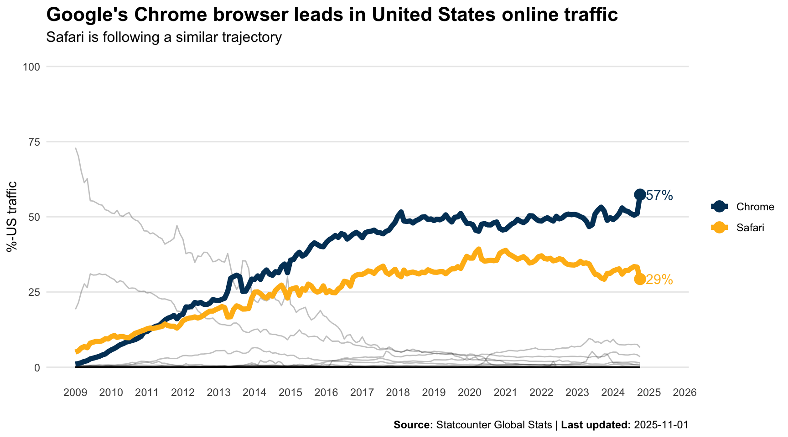

The Hex Update: Issue 002
the hex update
media
Key insights and what I learned about the media industry as of October 2024
New here? Check out this post to learn more.
I’m little behind on posting. Nonetheless, here’s an update of what I’ve found to be interesting in the media industry as of late. We’ve got cookies, AI in journalism, the sea of media choices, another pivot to video for news, the importance of culture for a media organization, the political information ecosystem, and the share of internet traffic for the Chrome browser.
If you’re short on time, here’s some quick takeaways:
- Google forgoes eliminating cookies, for now.
- Audiences have varying views on the use of AI in journalism.
- People have access to over 13 different media sources.
- Another pivot to video, news organizations may not be ready.
- Culture is critical for organizations in the creative-inventive industry (an interview with Greg Peters, Netflix’s Co-CEO).
- Check out these resources if you’re interested in the political information ecosystem.
Wanna stay a little longer? Check out my summary below.
What have I found interesting recently?
People’s perceptions of the use of AI in journalism
The Reuters Institute recently released a report focused on the public’s attitudes towards the use of artificial intelligence (AI) in journalism. Its aim was to better understand how audiences’ perceive the use of AI–specifically generative AI–in the creation of news. Using both survey and qualitative responses, the report highlighted some key, nuanced findings.
Surprisingly, when viewed globally, the report found just under half of respondents have read a large or moderate amount about AI (45%). Results for the US were slightly higher, where 53% reported reading a large or moderate amount about AI. Some differences were also present across demographic groups, especially when looking at younger and older age cohorts (Under 35 = 56%; Over 35 = 42%).
When it comes to perceptions on the use of news produced using AI, only 23% of US respondents mentioned feeling comfortable consuming news mostly produced by AI (Neither/nor = 18%; Uncomfortable = 52%; Don’t know = 7%). Although this is a pretty broad response towards the use of AI in news, the report went further by stating participant’s level of comfort is nuanced when different AI use cases were considered in the creation of news.
Three use cases of AI were presented to participants: behind the scenes work; content delivery; and content creation. According to the qualitative responses, many were comfortable with ‘behind the scenes’ uses of AI, but were less comfortable when it came to identifying ways to deliver news in new ways and formats, and they were least comfortable with the use of AI for content generation. In fact, many respondents believed a human should always be ‘in the loop’ during the content creation process. It’s also important to highlight that respondents’ reported having varying comfort levels for different types of content generation AI would be used for. In fact, the report states most respondents were ‘strongly opposed’ to the use of AI to create realistic-looking photographs or videos, even when disclosed. Finally, the article devotes a section to discussing people’s perceptions around the disclosure of the use of AI in news production.
Here’s a link to go deeper
What’s the takeaway?
Although AI affords many efficiencies and enhancements, news publishers must consider how audiences view the use of AI in news. Audiences are comfortable with the application of AI in cases of improved efficiency and the news consumption experience. However, this report makes it clear: audiences, at least for now, are not fully comfortable–even strongly opposed–with it being a part of specific types of news content production. This is especially relevant when AI is used to generate or edit realistic photographs and videos. There’s even negative attitudes towards using this type of content even when it’s clearly labelled by producers.
In sight of these results, it’s also important to consider consumers’ perceptions around disclosure: what is needed, even ethical, to effectively disclose the use of AI within the creation of news? Moreover, it’s important to consider how the type of disclosure relates to users’ trust in news. Certainly, there’s more open questions to explore than answers at this time.
The sea of media choices, is bundling the answer?
It’s obvious, audiences have a myriad of choices when it comes to consuming media. This isn’t a new or profound insight. But take a moment and count how many subscription services you have (really count). Now, consider the number of different sources that are accessible to consumers. On average, they have access to 13 different entertainment sources or subscriptions according to a survey performed by Hub Intel. It’s no surprise consumers have subscription fatigue, and media companies are seeking opportunities to address it. Bundling services is one such strategy, which at times has been dubbed “cable 2.0”.
Knowing the extent of choice, what would the ideal bundle look like for audiences? A staggering fact,
TV is no longer the center of the entertainment universe.
Indeed, according to the survey’s results, only about 50% of those 13 sources were premium video. This was even less for younger audiences. When given the opportunity to create their own ‘preferred bundle’, respondents’ service bundles went beyond just video and entertainment sources. The most requested services to be included within a bundle were high-speed internet, Netflix, mobile phone service, streaming music subscription, and a MVPD/vMVPD network bundle with live TV.
Here’s a link to go deeper
What’s the takeaway?
There’s one main takeaway: the services audiences are willing to pay for and are prioritising in their media consumption diet are internet-based, rather than legacy type media services. We know this is the case because of how people responded to prompts about what they view as an ideal service bundle.
It’s also important to consider the power of bundling strategies. This includes non-traditional types of bundles. Think of one of the original successful bundles: TV, internet, and home phone. Not necessarily related services, but it was a bundle consumers found value in and were willing to pay for. It would be interesting to explore how bundling strategies could be implemented across various media organizations, even some non-traditional bundling might provide some interesting value to audiences.
Another pivot to video?
According to a study published by the Reuters Institute for the Study of Journalism, video and video-led services are driving growth in news. Despite the lack of success of the first pivot to video for publishers, social media platforms are once again prioritizing video, especially short-form content. As suggested in an article from NiemanLab, many of the traditional social media platforms are modifying their platforms and products to prioritize short-form video content in a bid to compete with the massive growth of TikTok.
News consumption growth is not evenly spread across platforms, but rather it’s concentrated to a select few. Much of this growth, globally, is not coming from legacy social media networks, but it is coming from platforms like YouTube, TikTok, and Instagram. This growth is also being propelled by the younger audiences on these platforms. Zooming in on these groups, three motivations for using social video for news were identified:
- Trustworthiness and authenticity. The unfiltered nature of video makes the coverage more trustworthy and authentic.
- Convenience. They’re already on these platforms, and the algorithm acts as a filter to send content users find to be interesting.
- Access to different perspectives. This includes perspectives from others that align with a user.
Despite this growth, publishers creating content aimed to reach audiences on these platforms must confront specific issues. Capturing attention is first, much of which is going to influencers and celebrities and not necessarily journalists or news organizations. Even if news organizations capture user’s attention, they’re confronted with another big issue: the monetization of content on these platforms.
Here are some links to go deeper
What’s the takeaway?
It’s clear, video content is once again the priority for these platforms. Media organizations, especially news organizations, must confront this fact to remain relevant. Users are already on these platforms, and they receive certain gratifications from consuming video in these places. It’s a simple idea: be where your audience is and serve them with what they want. A simple thought in theory, but more challenging in terms of what’s needed to execute. Monetization strategies will also need to be considered if a third-party platform is relied on to reach and engage audiences.
An interview with Netflix’s co-CEO Greg Peters
The Decoder Podcast held an interview with Netflix’s co-CEO Greg Peters. Nilay Patel, the host of Decoder, devoted some questions to Netflix’s culture and its view on where the company fits within the broader media and entertainment industry.
While on the topic of culture, Reed Hastings’, co-founder of Netflix, 125-page powerpoint presentation was discussed. This document was the initial articulation of the culture Netflix strives to achieve. I highly suggest looking through it. Though it’s been refined since originally shared, many of the key tenets of the original document are present in the current version.
A few sections of the document struck me. For one, the emphasis on Netflix’s culture being likened to a sports team rather than a family was attention grabbing. They strive to hire the best talent and expect their workforce to be high-performing based on several general values.
On a first read, some might view this type of culture as being overly competitive and ruthless. But upon a deeper read, you begin to notice this is not the case: it’s emphasis is about embracing an open, honest, growth mindset type of culture that focuses its talent on solving the right challenges that are meaningful to the business.
The weight culture takes within the organization was also an interesting listen. Greg Peters even mentioned that although culture, strategy, and execution are all needed for a successful organization, he would take a great culture over excellent strategy and execution. You can still have a successful company if you have a great culture and just mediocre strategy and execution.
Although not directly addressed, the importance of understanding product market fit was an important theme that came up. Knowing where your organization and products fit within the market and the lives of your customers is critical. Additionally, product market fit was also connected back to the importance of culture. Although process is important, especially in some areas (e.g., finance and legal), it can create rigidity and brittleness. This limits media organization’s ability to move fast within the competitive entertainment industry and broader attention economy.
Process models were also addressed in the interview. It was posited that many of the models organizations use today were developed during the industrial revolution. These models certainly have their place in industries like manufacturing where you can iterate on a process to squeeze out as much efficiency as possible for a single product line. However, in the creative-inventive industry, things change quickly and pivots are required to stay relevant. These older models of process efficiency just don’t work in this environment. With this in mind, media organizations need to cultivate and embrace a culture that facilitates pivoting, so it can continue to provide products and experiences the market wants.
Here’s a link to go deeper
What’s the takeaway
Bottom line: listen to the whole podcast episode. It covers too many interesting topics to give all the themes discussed fair coverage in this summary. If forced to choose a few topics to focus on while listening, I’d closely focus on the discussion around culture, understanding product market fit, and how these two relate for organizations operating in a creative-inventive industry.
Netflix’s culture may not be the best fit for every organization. However, it’s still an interesting articulation of the importance of culture for the success of an organization. It’s also critical, when working in the ever-changing, fast-moving media industry to consider how culture influences a media’s organization’s ability to pivot quickly to meet the needs of the market.
The political information ecosystem
The Computational Social Science Lab at Penn (CSSLab) makes available some interesting interactive data visualizations mapping the political information ecosystem. Want to know more about the overall news consumption patterns for the US or your specific state? Check out this visualization here. Are you interested in exploring the level of partisan news echo chambers, the idea that media exposes people to overwhelmingly partisan and like-minded news content in your state? This data visualization is useful. Are you a news producer who is interested in seeing how news TV audiences’ diets are changing? This figure might be helpful.
More here.
What’s the takeaway
The trends highlighting the shift in TV news audiences is striking. Reviewing the overall news consumption trend, visually it seems audiences are spending less and less time consuming news on television. Where are these audiences going? In short, they’re moving more to no or minimal news viewing. Is this due to a shift in viewing to more digital spaces? Or, are audiences simply not watching news as much? A question worth further exploration.
One plot to ponder üìà
With all the talk about the end of the end of cookies in the Chrome browser, I wanted to know more about how much Chrome was being used in the United States. Specifically, I had the following questions: How much is the Chrome browser being used? What other browsers, if any, compete with Chrome? So, I sought out some data and created a plot to ponder.
This publicly available data comes from Statcounter Global Stats. In short, Statcounter is a web analytics service which aggregates browser usage based on page view measurements of sites who have installed the service on their website. You can read more about how they calculate these values here.
Have a look at and ponder about this trend:
Wrap-up
This post was another collection of what I’ve found interesting in the media industry as of late: cookies, AI in journalism, the level of media choice, the pivot of video in news, the importance of culture for media organizations, the political information ecosystem, and one plot to ponder were covered. Hopefully you found something useful or at the very least were introduced to some ideas that made you think.
Thanks for spending time with me.
Until next time, cheers üéâ.
Reuse
Citation
BibTeX citation:
@misc{berke2024,
author = {Berke, Collin K},
title = {The {Hex} {Update:} {Issue} 002},
date = {2024-11-02},
langid = {en}
}
For attribution, please cite this work as:
Berke, Collin K. 2024. “The Hex Update: Issue 002.”
November 2, 2024.